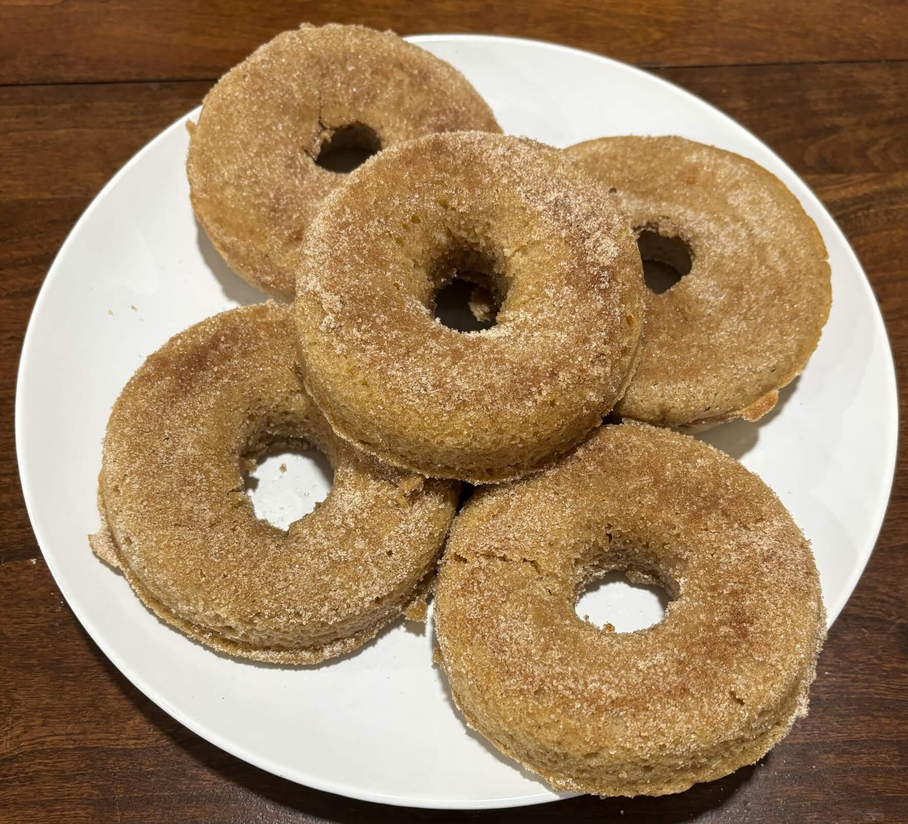

Home
Apple Cider Donuts

12 donuts or muffins
Ingredients
- Nonstick cooking spray
- 1 3/4 cups all-purpose flour (225 grams)
- 1 1/4 teaspoon baking powder
- 3/4 teaspoon fine sea salt
- 2 teaspoons ground cinnamon
- 1/2 teaspoons frshly grated nutmeg
- 1 cup unsalted butter (2 sticks) at room temp (225 grams)
- 3/4 cup light brown sugar (165 grams)
- 3/4 cup granulated sugar (150 grams)
- 2 large eggs at room temp
- 1 teaspoon vanilla extract
- 1/2 cup apple cider (120 milliliters)
Steps
- Heat oven to 350 degrees. Lightly grease 2 (6-cavity) donut pans (or a 12-cup muffin tin) with non-stick spray. In a medium bowl, add flour, baking powder, salt, 1 teaspoon cinnamon and nutmeg and whisk to combine. Set aside.
- In a bowl of a stand mixer fitted with paddle attatchment, cream 10 tablespoons (140 grams) butter, brown sugar, and 1/4 cup (50 grams) granulated sugar on medium speed until light and fluffy, 3 to 4 minutes. Add the eggs one at a time and mix until well incorporated after each addition, scraping the bowl as necessary. Beat in the vanilla extract
- Add the flour mixture and mix on low speed until incorporated. With the mixer running, add the apple cider in a slow, steady stream and mix to combine. Scrape the bowl well to make sure the batter is homogeneous.
- Spoon the batter into prepared donut pans, filling them about 2/3 of the way (you can also do this with a piping bag). Bake until evenly golden brown and a toothpick inserted into the center of the thickest portion comes out clean, 12 to 15 minutes. Rotate the pans halfway through baking. (if you are making muffins, divide the batter evenly between the prepared cups and bake for 15 to 20 minutes, rotating halfway through)
- While the donuts bake, whisk the remaining 1/2 cup (100 grams) granulated sugar and 1 teaspoon cinammon together in a small bowl to combine. In a seperate small bowl, melt the remaining 6 tablespoons butter in the microwave. Let the donuts cool for 5 minutes after baking, then unmold them from the pans, brush with the melted butter and dredge them in cinnamon sugar while they are still warm. Srve immediately or let them cool to room temp